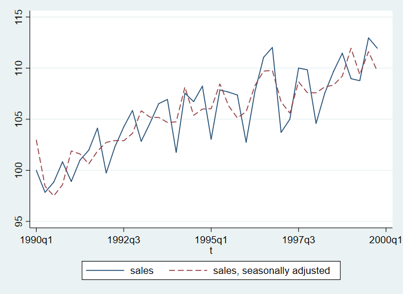
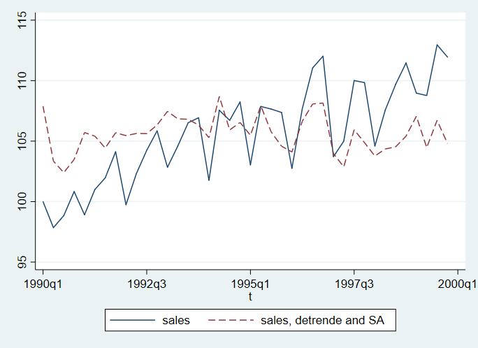
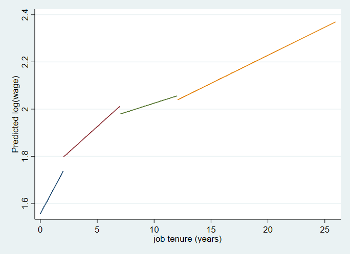
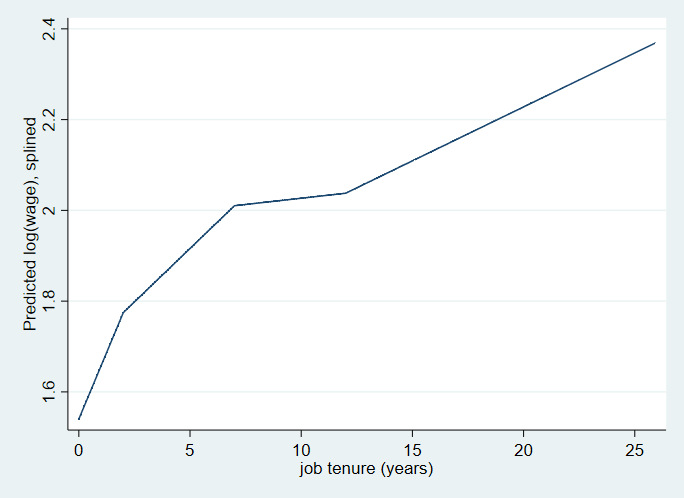

7 Regression with Indicator Variables
7.1 Testing for Significance of a Qualitative Factor
7.1.1 Regression with One Qualitative Measure
. use NEdata.. describe
Contains data from NEdata.dta
obs: 120
vars: 6 24 Oct 2004 13:28
size: 2,640
-------------------------------------------------------------------------------
storage display value
variable name type format label variable label
-------------------------------------------------------------------------------
state long %8.0g state
year int %8.0g
pop float %9.0g
dpi float %9.0g
dpipc float %9.0g
ldpipc float %9.0g
-------------------------------------------------------------------------------
Sorted by:
. summarize
Variable | Obs Mean Std. Dev. Min Max
-------------+---------------------------------------------------------
state | 120 3.5 1.714986 1 6
year | 120 1990.5 5.790459 1981 2000
pop | 120 2196276 1931629 515594 6362076
dpi | 120 4.33e+07 4.46e+07 4385134 1.93e+08
dpipc | 120 18.15802 5.662848 8.153382 33.38758
-------------+---------------------------------------------------------
ldpipc | 120 2.848302 .3265395 2.098433 3.508184
. mean dpipc, over(state)
Mean estimation Number of obs = 120
CT: state = CT
MA: state = MA
ME: state = ME
NH: state = NH
RI: state = RI
VT: state = VT
--------------------------------------------------------------
Over | Mean Std. Err. [95% Conf. Interval]
-------------+------------------------------------------------
dpipc |
CT | 22.32587 1.413766 19.52647 25.12527
MA | 19.77681 1.298507 17.20564 22.34798
ME | 15.17391 .9571251 13.27871 17.06911
NH | 18.66835 1.193137 16.30582 21.03088
RI | 17.26529 1.045117 15.19586 19.33473
VT | 15.73786 1.020159 13.71784 17.75788
--------------------------------------------------------------
. tabulate state, generate(NE)
state | Freq. Percent Cum.
------------+-----------------------------------
CT | 20 16.67 16.67
MA | 20 16.67 33.33
ME | 20 16.67 50.00
NH | 20 16.67 66.67
RI | 20 16.67 83.33
VT | 20 16.67 100.00
------------+-----------------------------------
Total | 120 100.00
. regress dpipc NE2-NE6
Source | SS df MS Number of obs = 120
-------------+---------------------------------- F(5, 114) = 5.27
Model | 716.218512 5 143.243702 Prob > F = 0.0002
Residual | 3099.85511 114 27.1917115 R-squared = 0.1877
-------------+---------------------------------- Adj R-squared = 0.1521
Total | 3816.07362 119 32.0678456 Root MSE = 5.2146
------------------------------------------------------------------------------
dpipc | Coef. Std. Err. t P>|t| [95% Conf. Interval]
-------------+----------------------------------------------------------------
NE2 | -2.549057 1.648991 -1.55 0.125 -5.815695 .7175814
NE3 | -7.151959 1.648991 -4.34 0.000 -10.4186 -3.88532
NE4 | -3.65752 1.648991 -2.22 0.029 -6.924158 -.3908815
NE5 | -5.060575 1.648991 -3.07 0.003 -8.327214 -1.793937
NE6 | -6.588007 1.648991 -4.00 0.000 -9.854646 -3.321369
_cons | 22.32587 1.166013 19.15 0.000 20.01601 24.63573
------------------------------------------------------------------------------
. use NEdata.. tabulate state, generate(NE)
state | Freq. Percent Cum.
------------+-----------------------------------
CT | 20 16.67 16.67
MA | 20 16.67 33.33
ME | 20 16.67 50.00
NH | 20 16.67 66.67
RI | 20 16.67 83.33
VT | 20 16.67 100.00
------------+-----------------------------------
Total | 120 100.00
. forvalues i = 1/5 {
2. generate NE_`i' = NE`i' - NE6
3. }
. regress dpipc NE_*
Source | SS df MS Number of obs = 120
-------------+---------------------------------- F(5, 114) = 5.27
Model | 716.218512 5 143.243702 Prob > F = 0.0002
Residual | 3099.85511 114 27.1917115 R-squared = 0.1877
-------------+---------------------------------- Adj R-squared = 0.1521
Total | 3816.07362 119 32.0678456 Root MSE = 5.2146
------------------------------------------------------------------------------
dpipc | Coef. Std. Err. t P>|t| [95% Conf. Interval]
-------------+----------------------------------------------------------------
NE_1 | 4.167853 1.064419 3.92 0.000 2.059247 6.276459
NE_2 | 1.618796 1.064419 1.52 0.131 -.48981 3.727402
NE_3 | -2.984106 1.064419 -2.80 0.006 -5.092712 -.8754996
NE_4 | .5103331 1.064419 0.48 0.633 -1.598273 2.618939
NE_5 | -.8927223 1.064419 -0.84 0.403 -3.001328 1.215884
_cons | 18.15802 .4760227 38.15 0.000 17.21502 19.10101
------------------------------------------------------------------------------
.
. lincom -(NE_1 + NE_2 + NE_3 + NE_4 + NE_5)
( 1) - NE_1 - NE_2 - NE_3 - NE_4 - NE_5 = 0
------------------------------------------------------------------------------
dpipc | Coef. Std. Err. t P>|t| [95% Conf. Interval]
-------------+----------------------------------------------------------------
(1) | -2.420154 1.064419 -2.27 0.025 -4.52876 -.3115483
------------------------------------------------------------------------------7.1.2 Regression with Two Qualitative Measures
. use nlsw88.(NLSW, 1988 extract)
. describe
Contains data from nlsw88.dta
obs: 2,246 NLSW, 1988 extract
vars: 17 21 Jun 2006 11:33
size: 60,642 (_dta has notes)
-------------------------------------------------------------------------------
storage display value
variable name type format label variable label
-------------------------------------------------------------------------------
idcode int %8.0g NLS id
age byte %8.0g age in current year
race byte %8.0g racelbl race
married byte %8.0g marlbl married
never_married byte %8.0g never married
grade byte %8.0g current grade completed
collgrad byte %16.0g gradlbl college graduate
south byte %8.0g lives in south
smsa byte %9.0g smsalbl lives in SMSA
c_city byte %8.0g lives in central city
industry byte %23.0g indlbl industry
occupation byte %22.0g occlbl occupation
union byte %8.0g unionlbl union worker
wage float %9.0g hourly wage
hours byte %8.0g usual hours worked
ttl_exp float %9.0g total work experience
tenure float %9.0g job tenure (years)
-------------------------------------------------------------------------------
Sorted by: idcode
. summarize
Variable | Obs Mean Std. Dev. Min Max
-------------+---------------------------------------------------------
idcode | 2,246 2612.654 1480.864 1 5159
age | 2,246 39.15316 3.060002 34 46
race | 2,246 1.282725 .4754413 1 3
married | 2,246 .6420303 .4795099 0 1
never_marr~d | 2,246 .1041852 .3055687 0 1
-------------+---------------------------------------------------------
grade | 2,244 13.09893 2.521246 0 18
collgrad | 2,246 .2368655 .4252538 0 1
south | 2,246 .4194123 .4935728 0 1
smsa | 2,246 .7039181 .4566292 0 1
c_city | 2,246 .2916296 .4546139 0 1
-------------+---------------------------------------------------------
industry | 2,232 8.189516 3.010875 1 12
occupation | 2,237 4.642825 3.408897 1 13
union | 1,878 .2454739 .4304825 0 1
wage | 2,246 7.766949 5.755523 1.004952 40.74659
hours | 2,242 37.21811 10.50914 1 80
-------------+---------------------------------------------------------
ttl_exp | 2,246 12.53498 4.610208 .1153846 28.88461
tenure | 2,231 5.97785 5.510331 0 25.91667
. keep if !missing(wage + race + union)
(368 observations deleted)
. generate lwage = log(wage)
. tabulate race, generate(R)
race | Freq. Percent Cum.
------------+-----------------------------------
white | 1,353 72.04 72.04
black | 501 26.68 98.72
other | 24 1.28 100.00
------------+-----------------------------------
Total | 1,878 100.00
. regress lwage R1 R2 union
Source | SS df MS Number of obs = 1,878
-------------+---------------------------------- F(3, 1874) = 38.73
Model | 29.3349228 3 9.77830761 Prob > F = 0.0000
Residual | 473.119209 1,874 .252464893 R-squared = 0.0584
-------------+---------------------------------- Adj R-squared = 0.0569
Total | 502.454132 1,877 .267690001 Root MSE = .50246
------------------------------------------------------------------------------
lwage | Coef. Std. Err. t P>|t| [95% Conf. Interval]
-------------+----------------------------------------------------------------
R1 | -.0349326 .1035125 -0.34 0.736 -.2379444 .1680793
R2 | -.2133924 .1049954 -2.03 0.042 -.4193126 -.0074721
union | .239083 .0270353 8.84 0.000 .1860606 .2921054
_cons | 1.913178 .1029591 18.58 0.000 1.711252 2.115105
------------------------------------------------------------------------------
. test R1 R2
( 1) R1 = 0
( 2) R2 = 0
F( 2, 1874) = 23.25
Prob > F = 0.00007.1.2.1 Interaction Effects
. use nlsw88.(NLSW, 1988 extract)
. keep if !missing(wage + race + union)
(368 observations deleted)
. generate lwage = log(wage)
. tabulate race, generate(R)
race | Freq. Percent Cum.
------------+-----------------------------------
white | 1,353 72.04 72.04
black | 501 26.68 98.72
other | 24 1.28 100.00
------------+-----------------------------------
Total | 1,878 100.00
. generate R1u = R1 * union
. generate R2u = R2 * union
. regress lwage R1 R2 union R1u R2u
Source | SS df MS Number of obs = 1,878
-------------+---------------------------------- F(5, 1872) = 26.63
Model | 33.3636017 5 6.67272035 Prob > F = 0.0000
Residual | 469.09053 1,872 .250582548 R-squared = 0.0664
-------------+---------------------------------- Adj R-squared = 0.0639
Total | 502.454132 1,877 .267690001 Root MSE = .50058
------------------------------------------------------------------------------
lwage | Coef. Std. Err. t P>|t| [95% Conf. Interval]
-------------+----------------------------------------------------------------
R1 | -.1818955 .1260945 -1.44 0.149 -.4291962 .0654051
R2 | -.4152863 .1279741 -3.25 0.001 -.6662731 -.1642995
union | -.2375316 .2167585 -1.10 0.273 -.6626452 .187582
R1u | .4232627 .2192086 1.93 0.054 -.0066561 .8531816
R2u | .6193578 .2221704 2.79 0.005 .1836302 1.055085
_cons | 2.07205 .1251456 16.56 0.000 1.82661 2.317489
------------------------------------------------------------------------------
. test R1u R2u
( 1) R1u = 0
( 2) R2u = 0
F( 2, 1872) = 8.04
Prob > F = 0.00037.2 Regression with Qualitative & Quantitative Factors
. use nlsw88.(NLSW, 1988 extract)
. keep if !missing(wage + race + union)
(368 observations deleted)
. generate lwage = log(wage)
. tabulate race, generate(R)
race | Freq. Percent Cum.
------------+-----------------------------------
white | 1,353 72.04 72.04
black | 501 26.68 98.72
other | 24 1.28 100.00
------------+-----------------------------------
Total | 1,878 100.00
. regress lwage R1 R2 union tenure
Source | SS df MS Number of obs = 1,868
-------------+---------------------------------- F(4, 1863) = 85.88
Model | 77.1526731 4 19.2881683 Prob > F = 0.0000
Residual | 418.434693 1,863 .224602626 R-squared = 0.1557
-------------+---------------------------------- Adj R-squared = 0.1539
Total | 495.587366 1,867 .265445831 Root MSE = .47392
------------------------------------------------------------------------------
lwage | Coef. Std. Err. t P>|t| [95% Conf. Interval]
-------------+----------------------------------------------------------------
R1 | -.070349 .0976711 -0.72 0.471 -.2619053 .1212073
R2 | -.2612185 .0991154 -2.64 0.008 -.4556074 -.0668297
union | .1871116 .0257654 7.26 0.000 .1365794 .2376438
tenure | .0289352 .0019646 14.73 0.000 .0250823 .0327882
_cons | 1.777386 .0975549 18.22 0.000 1.586058 1.968715
------------------------------------------------------------------------------
. test R1 R2
( 1) R1 = 0
( 2) R2 = 0
F( 2, 1863) = 29.98
Prob > F = 0.00007.2.1 Testing for Slope Differences
. use nlsw88.(NLSW, 1988 extract)
. keep if !missing(wage + race + union)
(368 observations deleted)
. generate lwage = log(wage)
. tabulate race, generate(R)
race | Freq. Percent Cum.
------------+-----------------------------------
white | 1,353 72.04 72.04
black | 501 26.68 98.72
other | 24 1.28 100.00
------------+-----------------------------------
Total | 1,878 100.00
. generate uTen = union * tenure
(10 missing values generated)
. regress lwage R1 R2 union tenure uTen
Source | SS df MS Number of obs = 1,868
-------------+---------------------------------- F(5, 1862) = 69.27
Model | 77.726069 5 15.5452138 Prob > F = 0.0000
Residual | 417.861297 1,862 .224415304 R-squared = 0.1568
-------------+---------------------------------- Adj R-squared = 0.1546
Total | 495.587366 1,867 .265445831 Root MSE = .47372
------------------------------------------------------------------------------
lwage | Coef. Std. Err. t P>|t| [95% Conf. Interval]
-------------+----------------------------------------------------------------
R1 | -.0715443 .0976332 -0.73 0.464 -.2630264 .1199377
R2 | -.2638742 .0990879 -2.66 0.008 -.4582093 -.0695391
union | .2380442 .0409706 5.81 0.000 .157691 .3183975
tenure | .0309616 .0023374 13.25 0.000 .0263774 .0355458
uTen | -.0068913 .0043112 -1.60 0.110 -.0153467 .001564
_cons | 1.766484 .0977525 18.07 0.000 1.574768 1.9582
------------------------------------------------------------------------------
.
. generate R1ten = R1 * tenure
(10 missing values generated)
. generate R2ten = R2 * tenure
(10 missing values generated)
. regress lwage R1 R2 union tenure R1ten R2ten
Source | SS df MS Number of obs = 1,868
-------------+---------------------------------- F(6, 1861) = 57.26
Model | 77.2369283 6 12.8728214 Prob > F = 0.0000
Residual | 418.350438 1,861 .224798731 R-squared = 0.1558
-------------+---------------------------------- Adj R-squared = 0.1531
Total | 495.587366 1,867 .265445831 Root MSE = .47413
------------------------------------------------------------------------------
lwage | Coef. Std. Err. t P>|t| [95% Conf. Interval]
-------------+----------------------------------------------------------------
R1 | -.082753 .1395 -0.59 0.553 -.3563459 .1908398
R2 | -.291495 .1422361 -2.05 0.041 -.570454 -.012536
union | .1876079 .0257915 7.27 0.000 .1370246 .2381912
tenure | .0257611 .0186309 1.38 0.167 -.0107785 .0623007
R1ten | .0024973 .0187646 0.13 0.894 -.0343045 .0392991
R2ten | .0050825 .018999 0.27 0.789 -.032179 .0423441
_cons | 1.794018 .1382089 12.98 0.000 1.522957 2.065078
------------------------------------------------------------------------------
. test R1ten R2ten
( 1) R1ten = 0
( 2) R2ten = 0
F( 2, 1861) = 0.19
Prob > F = 0.8291
.
. regress lwage R1 R2 union tenure uTen R1ten R2ten
Source | SS df MS Number of obs = 1,868
-------------+---------------------------------- F(7, 1860) = 49.48
Model | 77.8008722 7 11.1144103 Prob > F = 0.0000
Residual | 417.786494 1,860 .224616394 R-squared = 0.1570
-------------+---------------------------------- Adj R-squared = 0.1538
Total | 495.587366 1,867 .265445831 Root MSE = .47394
------------------------------------------------------------------------------
lwage | Coef. Std. Err. t P>|t| [95% Conf. Interval]
-------------+----------------------------------------------------------------
R1 | -.0697096 .1396861 -0.50 0.618 -.3436676 .2042485
R2 | -.2795277 .1423788 -1.96 0.050 -.5587668 -.0002886
union | .238244 .0410597 5.80 0.000 .1577161 .3187718
tenure | .0304528 .0188572 1.61 0.106 -.0065308 .0674364
uTen | -.0068628 .0043311 -1.58 0.113 -.0153572 .0016316
R1ten | -.0001912 .0188335 -0.01 0.992 -.0371283 .0367459
R2ten | .0023429 .0190698 0.12 0.902 -.0350576 .0397433
_cons | 1.76904 .1390492 12.72 0.000 1.496331 2.041749
------------------------------------------------------------------------------
. test uTen R1ten R2ten
( 1) uTen = 0
( 2) R1ten = 0
( 3) R2ten = 0
F( 3, 1860) = 0.96
Prob > F = 0.4098
.
. regress lwage union tenure uTen
Source | SS df MS Number of obs = 1,868
-------------+---------------------------------- F(3, 1864) = 92.25
Model | 64.0664855 3 21.3554952 Prob > F = 0.0000
Residual | 431.52088 1,864 .231502618 R-squared = 0.1293
-------------+---------------------------------- Adj R-squared = 0.1279
Total | 495.587366 1,867 .265445831 Root MSE = .48115
------------------------------------------------------------------------------
lwage | Coef. Std. Err. t P>|t| [95% Conf. Interval]
-------------+----------------------------------------------------------------
union | .2144586 .0414898 5.17 0.000 .1330872 .29583
tenure | .0298926 .0023694 12.62 0.000 .0252456 .0345395
uTen | -.0056219 .0043756 -1.28 0.199 -.0142035 .0029597
_cons | 1.655054 .0193938 85.34 0.000 1.617018 1.69309
------------------------------------------------------------------------------
.
. regress lwage tenure if !union
Source | SS df MS Number of obs = 1,408
-------------+---------------------------------- F(1, 1406) = 148.43
Model | 36.8472972 1 36.8472972 Prob > F = 0.0000
Residual | 349.032053 1,406 .248244703 R-squared = 0.0955
-------------+---------------------------------- Adj R-squared = 0.0948
Total | 385.87935 1,407 .274256823 Root MSE = .49824
------------------------------------------------------------------------------
lwage | Coef. Std. Err. t P>|t| [95% Conf. Interval]
-------------+----------------------------------------------------------------
tenure | .0298926 .0024536 12.18 0.000 .0250795 .0347056
_cons | 1.655054 .0200828 82.41 0.000 1.615659 1.69445
------------------------------------------------------------------------------
. predict double unw if e(sample), res
(470 missing values generated)
.
. regress lwage tenure if union
Source | SS df MS Number of obs = 460
-------------+---------------------------------- F(1, 458) = 55.95
Model | 10.0775663 1 10.0775663 Prob > F = 0.0000
Residual | 82.4888278 458 .180106611 R-squared = 0.1089
-------------+---------------------------------- Adj R-squared = 0.1069
Total | 92.5663941 459 .201669704 Root MSE = .42439
------------------------------------------------------------------------------
lwage | Coef. Std. Err. t P>|t| [95% Conf. Interval]
-------------+----------------------------------------------------------------
tenure | .0242707 .0032447 7.48 0.000 .0178944 .0306469
_cons | 1.869513 .0323515 57.79 0.000 1.805937 1.933088
------------------------------------------------------------------------------
. predict double nunw if e(sample), res
(1,418 missing values generated)
.
. generate double allres = nunw
(1,418 missing values generated)
. replace allres = unw if unw <.
(1,408 real changes made)
. sdtest allres, by(union)
Variance ratio test
------------------------------------------------------------------------------
Group | Obs Mean Std. Err. Std. Dev. [95% Conf. Interval]
---------+--------------------------------------------------------------------
nonunion | 1,408 7.51e-17 .0132735 .4980645 -.0260379 .0260379
union | 460 3.33e-17 .0197657 .4239271 -.0388425 .0388425
---------+--------------------------------------------------------------------
combined | 1,868 6.48e-17 .0111235 .4807605 -.0218157 .0218157
------------------------------------------------------------------------------
ratio = sd(nonunion) / sd(union) f = 1.3803
Ho: ratio = 1 degrees of freedom = 1407, 459
Ha: ratio < 1 Ha: ratio != 1 Ha: ratio > 1
Pr(F < f) = 1.0000 2*Pr(F > f) = 0.0000 Pr(F > f) = 0.0000
.
. regress lwage union tenure uTen, robust
Linear regression Number of obs = 1,868
F(3, 1864) = 109.84
Prob > F = 0.0000
R-squared = 0.1293
Root MSE = .48115
------------------------------------------------------------------------------
| Robust
lwage | Coef. Std. Err. t P>|t| [95% Conf. Interval]
-------------+----------------------------------------------------------------
union | .2144586 .0407254 5.27 0.000 .1345864 .2943308
tenure | .0298926 .0023964 12.47 0.000 .0251928 .0345924
uTen | -.0056219 .0038631 -1.46 0.146 -.0131984 .0019546
_cons | 1.655054 .0210893 78.48 0.000 1.613693 1.696415
------------------------------------------------------------------------------7.3 Seasonal Adjustment with Indicator Variables
. use turksales.. describe
Contains data from turksales.dta
obs: 40
vars: 2 21 Jun 2006 11:33
size: 320 (_dta has notes)
-------------------------------------------------------------------------------
storage display value
variable name type format label variable label
-------------------------------------------------------------------------------
t float %tq
sales float %9.0g
-------------------------------------------------------------------------------
Sorted by: t
. summarize
Variable | Obs Mean Std. Dev. Min Max
-------------+---------------------------------------------------------
t | 40 139.5 11.69045 120 159
sales | 40 105.6178 4.056961 97.84603 112.9617
. summarize sales, meanonly
. generate mu = r(mean)
. forvalues i=1/3 {
2. generate qseas`i'= (quarter(dofq(t)) == `i')
3. }
. regress sales qseas*
Source | SS df MS Number of obs = 40
-------------+---------------------------------- F(3, 36) = 4.03
Model | 161.370376 3 53.7901254 Prob > F = 0.0143
Residual | 480.52796 36 13.3479989 R-squared = 0.2514
-------------+---------------------------------- Adj R-squared = 0.1890
Total | 641.898336 39 16.4589317 Root MSE = 3.6535
------------------------------------------------------------------------------
sales | Coef. Std. Err. t P>|t| [95% Conf. Interval]
-------------+----------------------------------------------------------------
qseas1 | -5.232047 1.633891 -3.20 0.003 -8.545731 -1.918362
qseas2 | -2.842753 1.633891 -1.74 0.090 -6.156437 .4709317
qseas3 | -.8969368 1.633891 -0.55 0.586 -4.210621 2.416748
_cons | 107.8608 1.155335 93.36 0.000 105.5177 110.2039
------------------------------------------------------------------------------
. predict double salesSA, residual
. replace salesSA = salesSA + mu
(40 real changes made)
. summarize sales salesSA
Variable | Obs Mean Std. Dev. Min Max
-------------+---------------------------------------------------------
sales | 40 105.6178 4.056961 97.84603 112.9617
salesSA | 40 105.6178 3.510161 97.49429 111.9563
.
. label var salesSA "sales, seasonally adjusted"
. tsline sales salesSA, lpattern(solid dash)
.
. regress sales qseas* t
Source | SS df MS Number of obs = 40
-------------+---------------------------------- F(4, 35) = 54.23
Model | 552.710487 4 138.177622 Prob > F = 0.0000
Residual | 89.1878487 35 2.54822425 R-squared = 0.8611
-------------+---------------------------------- Adj R-squared = 0.8452
Total | 641.898336 39 16.4589317 Root MSE = 1.5963
------------------------------------------------------------------------------
sales | Coef. Std. Err. t P>|t| [95% Conf. Interval]
-------------+----------------------------------------------------------------
qseas1 | -4.415311 .7169299 -6.16 0.000 -5.870756 -2.959866
qseas2 | -2.298262 .7152449 -3.21 0.003 -3.750287 -.846238
qseas3 | -.6246916 .7142321 -0.87 0.388 -2.07466 .8252766
t | .2722452 .0219686 12.39 0.000 .2276466 .3168438
_cons | 69.47421 3.138432 22.14 0.000 63.10285 75.84556
------------------------------------------------------------------------------
. test qseas1 qseas2 qseas3
( 1) qseas1 = 0
( 2) qseas2 = 0
( 3) qseas3 = 0
F( 3, 35) = 15.17
Prob > F = 0.0000
. predict double salesSADT, residual
. replace salesSADT = salesSADT + mu
(40 real changes made)
.
. label var salesSADT "sales, detrende and SA"
. tsline sales salesSADT, lpattern(solid dash) yline(`mu')

Seasonal adjustment of time series

Seasonal adjustment and deterending of time series
7.4 Testing for Structural Stability & Structural Change
7.4.1 Constraints of Continuity & Differentiability
. use nlsw88.(NLSW, 1988 extract)
. describe
Contains data from nlsw88.dta
obs: 2,246 NLSW, 1988 extract
vars: 17 21 Jun 2006 11:33
size: 60,642 (_dta has notes)
-------------------------------------------------------------------------------
storage display value
variable name type format label variable label
-------------------------------------------------------------------------------
idcode int %8.0g NLS id
age byte %8.0g age in current year
race byte %8.0g racelbl race
married byte %8.0g marlbl married
never_married byte %8.0g never married
grade byte %8.0g current grade completed
collgrad byte %16.0g gradlbl college graduate
south byte %8.0g lives in south
smsa byte %9.0g smsalbl lives in SMSA
c_city byte %8.0g lives in central city
industry byte %23.0g indlbl industry
occupation byte %22.0g occlbl occupation
union byte %8.0g unionlbl union worker
wage float %9.0g hourly wage
hours byte %8.0g usual hours worked
ttl_exp float %9.0g total work experience
tenure float %9.0g job tenure (years)
-------------------------------------------------------------------------------
Sorted by: idcode
. summarize
Variable | Obs Mean Std. Dev. Min Max
-------------+---------------------------------------------------------
idcode | 2,246 2612.654 1480.864 1 5159
age | 2,246 39.15316 3.060002 34 46
race | 2,246 1.282725 .4754413 1 3
married | 2,246 .6420303 .4795099 0 1
never_marr~d | 2,246 .1041852 .3055687 0 1
-------------+---------------------------------------------------------
grade | 2,244 13.09893 2.521246 0 18
collgrad | 2,246 .2368655 .4252538 0 1
south | 2,246 .4194123 .4935728 0 1
smsa | 2,246 .7039181 .4566292 0 1
c_city | 2,246 .2916296 .4546139 0 1
-------------+---------------------------------------------------------
industry | 2,232 8.189516 3.010875 1 12
occupation | 2,237 4.642825 3.408897 1 13
union | 1,878 .2454739 .4304825 0 1
wage | 2,246 7.766949 5.755523 1.004952 40.74659
hours | 2,242 37.21811 10.50914 1 80
-------------+---------------------------------------------------------
ttl_exp | 2,246 12.53498 4.610208 .1153846 28.88461
tenure | 2,231 5.97785 5.510331 0 25.91667
. generate lwage = log(wage)
. generate Ten2 = tenure <= 2
. generate Ten7 = !Ten2 & tenure <= 7
. generate Ten12 = !Ten2 & !Ten7 & tenure <= 12
. generate Ten25 = !Ten2 & !Ten7 & !Ten12 & tenure < .
.
. generate tTen2 = tenure * Ten2
(15 missing values generated)
. generate tTen7 = tenure * Ten7
(15 missing values generated)
. generate tTen12 = tenure * Ten12
(15 missing values generated)
. generate tTen25 = tenure * Ten25
(15 missing values generated)
.
. regress lwage Ten* tTen*, nocons hascons
Source | SS df MS Number of obs = 2,231
-------------+---------------------------------- F(7, 2223) = 37.12
Model | 76.6387069 7 10.9483867 Prob > F = 0.0000
Residual | 655.578361 2,223 .294907045 R-squared = 0.1047
-------------+---------------------------------- Adj R-squared = 0.1018
Total | 732.217068 2,230 .328348461 Root MSE = .54305
------------------------------------------------------------------------------
lwage | Coef. Std. Err. t P>|t| [95% Conf. Interval]
-------------+----------------------------------------------------------------
Ten2 | 1.55662 .0383259 40.62 0.000 1.481462 1.631778
Ten7 | 1.708728 .060084 28.44 0.000 1.590901 1.826554
Ten12 | 1.870808 .1877798 9.96 0.000 1.502566 2.23905
Ten25 | 1.751961 .1691799 10.36 0.000 1.420194 2.083728
tTen2 | .0897426 .0331563 2.71 0.007 .0247221 .1547631
tTen7 | .0434089 .0140739 3.08 0.002 .0158095 .0710083
tTen12 | .0154208 .019786 0.78 0.436 -.0233801 .0542218
tTen25 | .0238014 .0102917 2.31 0.021 .0036191 .0439837
------------------------------------------------------------------------------
. predict double lwagehat
(option xb assumed; fitted values)
(15 missing values generated)
.
. label var lwagehat "Predicted log(wage)"
. sort tenure
.
. twoway (line lwagehat tenure if tenure <= 2) (line lwagehat tenure if tenure
> > 2 & tenure <= 7) (line lwagehat tenure if tenure > 7 & tenure <= 12) (lin
> e lwagehat tenure if tenure > 12 & tenure < .), legend(off)
.
. mkspline sTen2 2 sTen7 7 sTen12 12 sTen25 = tenure
. regress lwage sTen*
Source | SS df MS Number of obs = 2,231
-------------+---------------------------------- F(4, 2226) = 64.55
Model | 76.1035947 4 19.0258987 Prob > F = 0.0000
Residual | 656.113473 2,226 .294749988 R-squared = 0.1039
-------------+---------------------------------- Adj R-squared = 0.1023
Total | 732.217068 2,230 .328348461 Root MSE = .54291
------------------------------------------------------------------------------
lwage | Coef. Std. Err. t P>|t| [95% Conf. Interval]
-------------+----------------------------------------------------------------
sTen2 | .1173168 .0248619 4.72 0.000 .0685619 .1660716
sTen7 | .0471177 .009448 4.99 0.000 .02859 .0656455
sTen12 | .0055041 .0111226 0.49 0.621 -.0163076 .0273158
sTen25 | .0237767 .0083618 2.84 0.005 .007379 .0401744
_cons | 1.539985 .0359605 42.82 0.000 1.469465 1.610505
------------------------------------------------------------------------------
.
. predict double lwageSpline
(option xb assumed; fitted values)
(15 missing values generated)
.
. label var lwageSpline "Predicted log(wage), splined"
. twoway line lwageSpline tenure
.

Piecewise wage-tenure profile

Piecewise linear wage-tenure profile